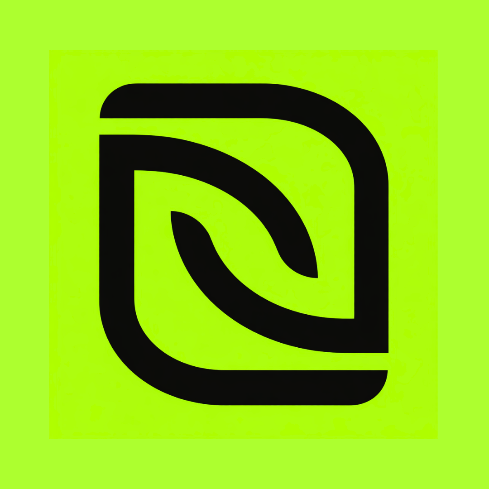

Private profiles
Each user gets a separate account and Firestore-backed project history for secure, private tracking.

ColdReachEverything you need to track outreach, stay organized, and manage follow-ups in one private workspace.
Each user gets a separate account and Firestore-backed project history for secure, private tracking.
Application status changes sync instantly across sessions, giving you always-fresh view of your pipeline.
Search by company, resume version, or notes to find the right outreach entry fast.
Open any application to review contact info, dates, status, and notes in a polished modal layout.
Update application progress quickly with inline status controls and dedicated modal actions.
A refined dark interface built to keep your attention on the work, with modern animations and clean spacing.